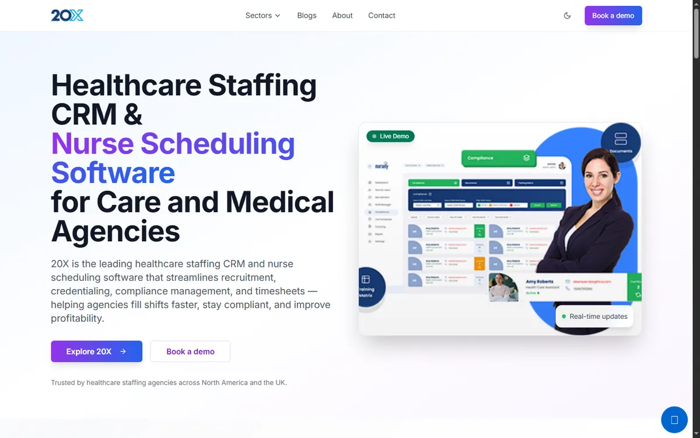

Visual archive
20X
Healthcare staffing CRM & nurse scheduling — Benagon production React/TypeScript.



Point 1
Recruitment & compliance
Point 2
Worker mobile app
Point 3
UK / international clients
This page is a doomsday backup: local images + static shell so the product still has a face if paid hosting ends.
© 2026 Samson P G · Offline archive